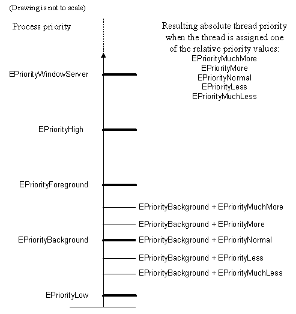

|
| |
A thread can be assigned one of the five relative priority values:
EPriorityMuchLess
EPriorityLess
EPriorityNormal
EPriorityMore
EPriorityMuchMore
which are enumerators of the TThreadPriority enumeration. These priority values are assigned through RThread::SetPriority().
The resulting absolute priority of a thread is the sum of this relative priority value and the priority value of its owning process.
The following diagram shows the possible absolute priority values of
a thread when its owning process has a priority value of
EPriorityBackground.

Copyright ©2002 Symbian Ltd. 6.1-00174 |
|